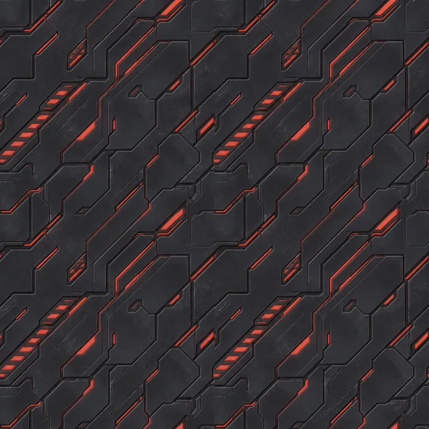

Trzy zachowania przeszkód
Stałe bramy, bramy pojawiające się po podglądzie oraz ruchome bramy, które przesuwają się, zasuwają lub cofają. Szczeliny zwężają się z dystansem.
Leć tunelem. Znajdź szczelinę.
Niekończący się lot przez obcy tunel. Omijaj ścianę, przeciskaj się przez szczelinę w każdej bramie i zbieraj kryształy, by ładować tarczę.
Projekt Unity ma pełną pętlę biegu, hangar i ekrany ustawień; publicznej wersji jeszcze nie ma.
Przeciągnij, by poruszać się wewnątrz tunelu. Na komputerze użyj klawiszy A i D lub strzałek.
Każda brama zostawia szczelinę. Stałe, pojawiające się i ruchome przeszkody pojawiają się w miarę biegu, a szczeliny zwężają się z dystansem.
Kryształy dają punkty i combo oraz ładują tarczę, którą podnosisz podwójnym stuknięciem. Bieg kończy się zderzeniem, a najlepszy wynik zostaje zapisany.
Stałe bramy, bramy pojawiające się po podglądzie oraz ruchome bramy, które przesuwają się, zasuwają lub cofają. Szczeliny zwężają się z dystansem.
Zbieranie kryształów ładuje tarczę. Podwójne stuknięcie ją podnosi.
Punkty pochodzą z dystansu, kryształów, przejętych bram i bliskich minięć, z mnożnikiem combo.
Tunel zmienia motyw podczas lotu: kriogeniczny przewód, biomechaniczne żyły, rdzeń reaktora i szczelina pustki.
Cztery kosmetyczne kadłuby, kupowane za Xeno zebrane w biegach. Nie dają przewagi w rozgrywce.
Dźwięk, adaptacyjna muzyka, wibracje i ograniczony ruch można każdy włączyć lub wyłączyć. Postęp jest zapisywany na urządzeniu.
Daty premiery jeszcze nie ma. To cele projektu, a nie obietnice.
Tekstury materiałów z projektu. To nie są zrzuty ekranu z rozgrywki.



Niekończący się lot tunelem na telefony. Sterujesz wewnątrz obcego tunelu, przelatujesz przez szczelinę w każdej bramie przeszkód i zbierasz kryształy za punkty i tarczę. Gra studia BlastBlast! i Vacuum Shot są również niekończące się, ale poruszają się odrzutem; tutaj sterujesz.
Jeszcze nie. Alien Flying to wczesny prototyp bez publicznej wersji i daty premiery. Docelowe platformy to Android i iOS.
Alien Flying tworzy WillowinWorlds, niezależne studio gier mobilnych (zobacz jego główne gry). Obserwuj WillowinWorlds w mediach społecznościowych linkowanych na tej stronie lub napisz e-mail willowinworlds@gmail.com aby dostawać nowości o Alien Flying.
Głosowanie otworzy się na kanałach studia. Obserwuj WillowinWorlds, by wziąć udział.